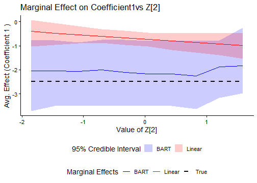
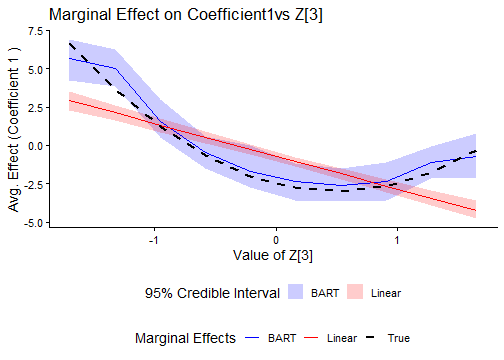
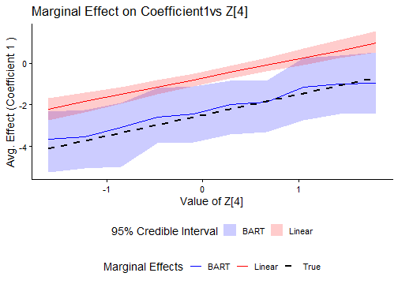

Calculating and Plotting Marginal Effects
marginal-effects.RmdThis vignette shows how to calculate and visualize marginal effects
of covariates (Z) on the systematic component of
coefficients (beta) using bayesm.HART. We
compare marginal effects from a HART specification against a linear
hierarchical specification.
Load Packages and Setup
We load bayesm.HART and other necessary packages for
data manipulation and plotting.
Data Simulation
First, we simulate hierarchical multinomial logit data. The data
generating process uses a nonlinear Friedman function linking
Z to the systematic component of beta.
## ---- Dimensions ----
nlgt = 300 # num of cross sectional units
nT = 20 # num of periods (observations) per unit
p = 3 # num of choices (incl. outside option, j=0..p-1)
nz = 10 # num of characteristics variables in Z
## ---- Variables per choice alternative ----
nXa = 1 # num of alternative-specific variables
nXd = 1 # num of variables fixed across alternatives
const = TRUE # Include intercepts?
## ---- Calculate total number of coefficients per unit (beta_i) ----
# This is calculated based on the parameters above
ncoef_calc <- const * (p - 1) + (p - 1) * nXd + nXa
## ---- Mixture components for individual heterogeneity ----
ncomp = 1 # num of mixture components for eps_i
sigma_inv_diag_val = 1 # Precision for eps_i draws (assuming diagonal Sigma)
## ---- Simulate Data using Friedman function ----
sim_output <- sim_hier_mnl(
nlgt = nlgt,
nT = nT,
p = p,
nz = nz,
nXa = nXa,
nXd = nXd,
const = const,
beta_func_type = "friedman", # Specify friedman
beta_func_args = list(coefs = c(10, 20, 10, 1), shift = -30, scale = 10), # Pass the function arguments
ncomp = ncomp,
sigma_inv_diag = sigma_inv_diag_val,
seed = 1234 # Use seed from setup chunk
)
# Prepare data list in the format required by the estimation functions
Data1 <- list(p = sim_output$p, lgtdata = sim_output$lgtdata, Z = sim_output$Z)
true_values <- sim_output$true_values
Z <- sim_output$Z # Keep Z easily accessible
ncoef <- true_values$dimensions$ncoef # Get actual ncoef from output
# message(paste("Simulated data for", nlgt, "individuals."))
message(paste("Number of coefficients per individual (ncoef):", ncoef))Model Estimation
We estimate two models:
-
Linear Model:
beta_i = Delta^\top Z_i + epsilon_i. -
HART Model:
beta_i = Delta(Z_i) + epsilon_i.
We use reduced MCMC iterations for faster vignette execution.
Linear Model Estimation
## ---- MCMC Parameters (Reduced for Vignette) ----
R_linear = 2000 # Low iterations for vignette build speed
keep_linear = 10 # Keep every 10th draw
burn_linear = 1000 # Burn-in (applied to raw draws)
model_cache_file <- file.path(
vignette_cache_dir,
sprintf("mfx-models-R%s-%s-keep%s-%s.rds", R_linear, 2000, keep_linear, 10)
)
model_cache_ok <- FALSE
if (file.exists(model_cache_file)) {
model_cache <- tryCatch(readRDS(model_cache_file), error = function(e) NULL)
model_cache_ok <- !is.null(model_cache) &&
!is.null(model_cache$out_linear) && !is.null(model_cache$out_bart)
if (model_cache_ok) {
out_linear <- model_cache$out_linear
out_bart <- model_cache$out_bart
cat("Loaded cached model draws from:", model_cache_file, "\n")
}
}
#> Loaded cached model draws from: C:\Users\twiem\AppData\Local/R/cache/R/bayesm.HART/vignettes/mfx-models-R2000-2000-keep10-10.rds
if (!model_cache_ok) {
## ---- Prior Specification ----
Prior_linear = list(ncomp = 1) # Assumes single component for simplicity
## ---- Run MCMC Sampler ----
out_linear = bayesm.HART::rhierMnlRwMixture(
Data = Data1,
Prior = Prior_linear,
Mcmc = list(R = R_linear,
keep = keep_linear,
nprint = 0), # Suppress printing
r_verbose = FALSE
)
}
# Set the class attribute for S3 method dispatch
class(out_linear) <- "rhierMnlRwMixture"
fit_linear_model <- TRUE
# Calculate burn-in based on *kept* draws for marginal effects later
burn_linear_kept <- ceiling(burn_linear / keep_linear)
message("Linear model estimation complete.")BART Model Estimation
## ---- MCMC Parameters (Reduced for Vignette) ----
R_bart = 2000 # Low iterations for vignette build speed
keep_bart = 10 # Keep every draw
burn_bart = 1000 # Burn-in (applied to raw draws)
if (!model_cache_ok) {
## ---- Prior Specification (including BART hyperparameters) ----
Prior_bart = list(
ncomp = 1,
bart = list(num_trees = 50, # Number of trees in the BART sum
power = 2, # Tree depth penalization
base = 0.95, # Tree depth penalization
# Prior sd for terminal node params (scaled by num_trees)
tau = 2 / sqrt(50),
numcut = 50, # Max number of cutpoints per variable
sparse = FALSE # Use sparsity inducing prior?
) # BART list end
) # Prior list end
## ---- Run MCMC Sampler ----
out_bart = bayesm.HART::rhierMnlRwMixture(
Data = Data1,
Prior = Prior_bart,
Mcmc = list(R = R_bart, keep = keep_bart, nprint = 0),
r_verbose = FALSE
)
saveRDS(
list(out_linear = out_linear, out_bart = out_bart, generated_at = Sys.time()),
model_cache_file
)
cat("Saved model draws cache to:", model_cache_file, "\n")
}
# Calculate burn-in based on *kept* draws for marginal effects later
burn_bart_kept <- ceiling(burn_bart / keep_bart)
message("BART model estimation complete.")Marginal Effects Calculation
We now calculate the marginal effect of one specific covariate
(Z[3]) on one specific coefficient (beta_1).
We define a grid of values for Z[3] while holding other
covariates at their means.
## ---- Setup Parameters ----
# target_covariate_index_mfx <- 3 # Now defined inside loop
n_grid_points <- 10 # Number of points for the covariate grid
target_coef_index <- 1 # Coefficient index of beta to plot (beta_1)
ci_level_plot <- 0.95 # Credible interval level for plot
Z_mean <- t(as.matrix(colMeans(Data1$Z))) # Calculate Z_mean once
# Define the covariates we want to plot against
covariate_indices_to_plot <- c(2, 3, 4)Now we loop through the selected covariates, calculate the marginal effects for each, and plot the results.
# Initialize an empty list to store the plots
plot_list <- list()
# Loop through each target covariate index
for (target_covariate_index_mfx in covariate_indices_to_plot) {
message(paste0("\n--- Processing Marginal Effects for Z[", target_covariate_index_mfx, "] ---"))
## ---- Construct z_values Matrix for current covariate ----
target_col <- Data1$Z[, target_covariate_index_mfx]
grid_vec <- seq(min(target_col, na.rm = TRUE),
max(target_col, na.rm = TRUE),
length.out = n_grid_points)
z_values_loop <- matrix(rep(Z_mean, each=n_grid_points),
nrow=n_grid_points, ncol=ncol(Data1$Z))
z_values_loop[, target_covariate_index_mfx] <- grid_vec
if (!is.null(colnames(Data1$Z))) {
colnames(z_values_loop) <- colnames(Data1$Z)
} else {
colnames(z_values_loop) <- paste0("Z", 1:ncol(Data1$Z))
}
# Determine the name for the plot axis variable
plot_var_name <- paste0("z_val_", target_covariate_index_mfx)
## ---- Calculate Marginal Effects for current covariate ----
mfx_bart_loop <- marginal_effects(
object = out_bart,
Z = Z_mean,
z_values = z_values_loop,
burn = burn_bart_kept,
verbose = FALSE
)
mfx_summary_bart_loop <- summary(mfx_bart_loop)
mfx_linear_loop <- marginal_effects(
object = out_linear,
Z = Z_mean,
z_values = z_values_loop,
burn = burn_linear_kept,
verbose = FALSE
)
mfx_summary_linear_loop <- summary(mfx_linear_loop)
## ---- Plot Marginal Effects for current covariate ----
plot_objects_loop <- list(BART = mfx_summary_bart_loop, Linear = mfx_summary_linear_loop)
color_vals <- c("BART" = "blue", "Linear" = "red", "True" = "black")
linetype_vals <- c("BART" = "solid", "Linear" = "solid", "True" = "dashed")
fill_vals <- c("BART" = "blue", "Linear" = "red")
fill_vals <- fill_vals[names(fill_vals) %in% names(plot_objects_loop)]
plot_args_loop <- list(
x = plot_objects_loop[[1]],
x_name = names(plot_objects_loop)[1],
plot_axis_var = plot_var_name,
coef_index = target_coef_index,
ci_level = ci_level_plot,
color_values = color_vals,
linetype_values = linetype_vals,
fill_values = fill_vals,
xlab = paste("Value of Z[",target_covariate_index_mfx,"]", sep=""),
ylab = paste("Avg. Effect (Coefficient", target_coef_index, ")"),
title = paste("Marginal Effect on Coefficient", target_coef_index,
"vs Z[", target_covariate_index_mfx, "]", sep="")
)
plot_args_loop[[names(plot_objects_loop)[2]]] <- plot_objects_loop[[2]]
base_plot_loop <- do.call(plot, plot_args_loop)
## ---- Calculate and Add True Marginal Effect Line ----
true_avg_betabar_on_grid_loop <- sapply(grid_vec, function(grid_val) {
Z_counterfactual <- Z_mean
Z_counterfactual[, target_covariate_index_mfx] <- grid_val
true_val_i <- tryCatch({
bayesm.HART:::.beta_Z_friedman(
Z_counterfactual[1, ],
coefs = c(10, 20, 10, 1), shift = -30, scale = 10)
}, error = function(e) { NA })
return(true_val_i)
})
if (!anyNA(true_avg_betabar_on_grid_loop)){
true_line_data_loop <- data.frame(
plot_var_col = grid_vec,
true_mean = true_avg_betabar_on_grid_loop,
model = "True"
)
names(true_line_data_loop)[1] <- plot_var_name
final_plot_loop <- base_plot_loop +
geom_line(data = true_line_data_loop,
aes(x = .data[[plot_var_name]], y = true_mean,
color = .data$model, linetype = .data$model),
linewidth = 1) +
scale_color_manual(values = color_vals, name = "Marginal Effects") +
scale_linetype_manual(values = linetype_vals, name = "Marginal Effects") +
scale_fill_manual(values = fill_vals,
name = paste0(ci_level_plot * 100, "% Credible Interval"),
guide = guide_legend(override.aes = list(alpha = 0.2))) +
theme_classic(base_size = 14) +
theme(legend.position = "bottom", legend.box = "vertical")
} else {
warning(paste0("True marginal effect line could not be calculated for Z[",
target_covariate_index_mfx, "]. Plotting estimated effects only."))
final_plot_loop <- base_plot_loop + theme_classic(base_size = 14) +
theme(legend.position = "bottom", legend.box = "vertical")
}
## ---- Store Plot (don't print yet) ----
plot_list[[paste0("Z", target_covariate_index_mfx)]] <- final_plot_loop
# print(final_plot_loop) # Removed print from inside loop
} # End loop over covariate indices
#>
#> --- Processing Marginal Effects for Z[2] ---
#> Scale for colour is already present.
#> Adding another scale for colour, which will replace the existing scale.
#> Scale for linetype is already present.
#> Adding another scale for linetype, which will replace the existing scale.
#> Scale for fill is already present.
#> Adding another scale for fill, which will replace the existing scale.
#>
#> --- Processing Marginal Effects for Z[3] ---
#>
#> Scale for colour is already present.
#> Adding another scale for colour, which will replace the existing scale.
#> Scale for linetype is already present.
#> Adding another scale for linetype, which will replace the existing scale.
#> Scale for fill is already present.
#> Adding another scale for fill, which will replace the existing scale.
#>
#> --- Processing Marginal Effects for Z[4] ---
#>
#> Scale for colour is already present.
#> Adding another scale for colour, which will replace the existing scale.
#> Scale for linetype is already present.
#> Adding another scale for linetype, which will replace the existing scale.
#> Scale for fill is already present.
#> Adding another scale for fill, which will replace the existing scale.
# --- Now print all stored plots ---
message("\n--- Displaying Stored Plots ---")
#>
#> --- Displaying Stored Plots ---
for (plot_name in names(plot_list)){
message(paste("Plotting results for:", plot_name))
print(plot_list[[plot_name]])
}
#> Plotting results for: Z2
#> Plotting results for: Z3
#> Plotting results for: Z4

These plots show estimated average effects of Z[2],
Z[3], and Z[4] on the target coefficient
(beta_1) across each covariate range. In this simulation
setup, the HART curve (blue) tracks the nonlinear true curve (dashed
black) more closely than the linear specification (red) over the
displayed grid. Shaded regions are posterior credible intervals for
estimated effects.